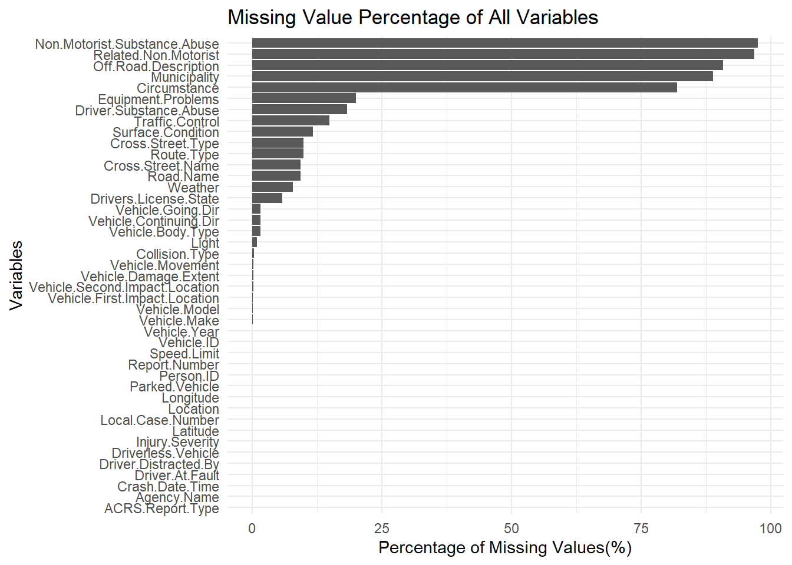
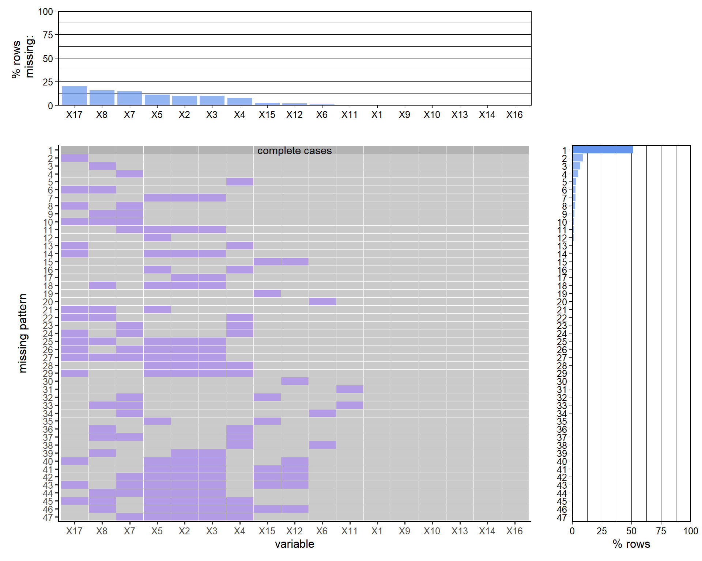

1
Report.Number "MCP3040003N"
Local.Case.Number "190026050"
Agency.Name "Montgomery County Police"
ACRS.Report.Type "Property Damage Crash"
Crash.Date.Time "05/31/2019 03:00:00 PM"
Route.Type NA
Road.Name NA
Cross.Street.Type NA
Cross.Street.Name NA
Off.Road.Description "PARKING LOT OF 3215 SPARTAN RD"
Municipality NA
Related.Non.Motorist NA
Collision.Type "OTHER"
Weather "CLEAR"
Surface.Condition NA
Light "DAYLIGHT"
Traffic.Control NA
Driver.Substance.Abuse "UNKNOWN"
Non.Motorist.Substance.Abuse NA
Person.ID "DE2A24CD-7919-4F8D-BABF-5B75CE12D21E"
Driver.At.Fault "Yes"
Injury.Severity "NO APPARENT INJURY"
Circumstance NA
Driver.Distracted.By "UNKNOWN"
Drivers.License.State NA
Vehicle.ID "165AD539-A8C8-4004-AF73-B7DCAAA8B3CC"
Vehicle.Damage.Extent "SUPERFICIAL"
Vehicle.First.Impact.Location "ONE OCLOCK"
Vehicle.Second.Impact.Location "ONE OCLOCK"
Vehicle.Body.Type "PASSENGER CAR"
Vehicle.Movement "PARKING"
Vehicle.Continuing.Dir "North"
Vehicle.Going.Dir "North"
Speed.Limit "15"
Driverless.Vehicle "No"
Parked.Vehicle "No"
Vehicle.Year "2004"
Vehicle.Make "HONDA"
Vehicle.Model "TK"
Equipment.Problems "UNKNOWN"
Latitude "39.15004"
Longitude "-77.06309"
Location "(39.15004368, -77.06308884)" 2 Data
2.1 Technical Description
For the proposed project, we plan to utilize a dataset called Crash Reporting - Drivers Data from DATA.GOV, available at https://catalog.data.gov/dataset/crash-reporting-drivers-data. This dataset is published and maintained by data.montgomerycountymd.gov and is updated weekly for analysis.
The data was collected collaboratively by several local law enforcement agencies in Montgomery County via the Automated Crash Reporting System (ACRS) of the Maryland State Police, including the Montgomery County Police, Gaithersburg Police, Rockville Police, and the Maryland-National Capital Park Police.
The dataset comprises 169,760 rows and 43 columns. For our project, we have chosen the CSV format of the dataset. Other formats of the data such as RDF, JSON, XML, and a landing page format are also available on the source website. Notably, the data includes comprehensive details of vehicle and road conditions in the reported traffic collisions.
However, a known issue regarding the dataset is that it also contains unverified collision data. Such unverified information can lead to biases or inaccuracies in analyzing and interpreting different variables. Another potential issue of the data after the initial examination was the mismatch between the ACRS Report Type and the Injury Severity columns. For example, an incident was classified as Injury Crash in the ACRS Report Type but in the Injury Severity it is marked as NO APPARENT INJURY. Such mismatches lead us to the decision of using Injury Severity as it provides more specific and accurate information about the car crash. Also, in Vehicle Year column, there are abnormal data value such as 0, 9999, 2024. These are likely to be incorrect values due to manual input or missing data, so we have decided to treat those abnormal data as missing value.
To import the dataset into an R environment for analysis, we will use the following R script:
This script reads the CSV file into a data frame. We use head(data)[1,] to display the first row of the dataset, providing a quick overview of the data structure.
2.2 Research plan
As mentioned in the Introduction Chapter, we plan to investigate five questions in our study:
Accident Hotspots: To identify the locations with the highest frequency of traffic collisions, we will utilize ‘Route Type’ and ‘Cross-Street Type’ variables to pinpoint specific areas or route types where accidents occur more frequently.
Time Patterns: We will use’Crash Date/Time’ variable to understand the temporal patterns of accidents. This variable contains detailed information of the time, date, and year when the accident occurred.
Collision Causes: We plan to use variables such as ‘Driver Substance Abuse’, ‘Driver Distracted By’, ‘Vehicle Movement’, and ‘Equipment Problems’ to understand the common causes of collisions and the severity of the collisions.
Environmental Impact: The influence of external conditions on traffic accidents can be assessed using variables like ‘Weather’, ‘Surface Condition’, ‘Light’, ‘Traffic Control’, and ‘Speed Limit’. We could associate these factors with the injury severity and vehicle damage extent.
Vehicle Condition: To determine if certain types of vehicles are more frequently involved in accidents, we will use the ‘Vehicle Body Type’, ‘Vehicle Year’, and ‘Vehicle Make’ variables. These variables could assist us in understanding the vehicle damage extent.
A structured table of the research plan is shown as below:
| NO. | Research Question | Independent Variables | Dependent Variable |
|---|---|---|---|
| 1 | Accident Hotspots | Route Type, Cross-Street Type | N/A |
| 2 | Time Patterns | Crash Date/Time | N/A |
| 3 | Collision Causes | Driver Substance Abuse, Driver Distracted By, Vehicle Movement, Equipment Problems | Vehicle Damage Extent |
| 4 | Environmental Impact | Weather, Surface Condition, Light, Traffic Control, Speed Limit | Injury Severity, Vehicle Damage Extent |
| 5 | Vehicle Condition | Vehicle Year, Vehicle Make | Vehicle Damage Extent |
2.3 Missing value analysis

The graph indicates the following:
Approximately 95% of the data in Non.Motorist.Substance.Abuse and Related.Non.Motorist categories is missing, suggesting a low incidence of accidents involving non-motorists.
Off.Road.Description, Municipality, and Circumstance columns exhibit about 80% missing values, limiting their informational utility.
Approximately half of the variables exhibit no missing values.
We will next refine our dataset to focus specifically on variables that are relevant to our research question. Specifically, this refinement involves the exclusion of three types of columns:
A. Identifier columns such as Report.Number, Local.Case.Number, and Vehicle.ID, which, although useful for case identification, do not provide meaningful data for our analysis.
B. Columns with a high rate of missing data, like Off.Road.Description and Municipality, offer limited informational value.
C. Variables that are not directly related to our research questions, such as Vehicle.Going.Dir and Vehicle.First.Impact.Location.
To analyze and interpret missing values, we will employ bar charts to visualize the percentage of missing data and use the ‘plot missing’ function to identify any discernible patterns in the missing values.

From the bar chart, it is evident that all the variables of interest have less than 20% missing values. Notably, Equipment.Problems and Driver.Substance.Abuse exhibit relatively higher percentages of missing values, each exceeding 15%. The majority of the variables demonstrate relatively complete data values.
To enhance our visual analysis of the missing value patterns, we have selected a random subset of 500 rows and used numerical value to map the name of variables. This sample will help us more clearly discern any underlying trends in the missing value.
Crash.Date.Time Route.Type Cross.Street.Type
1 2 3
Weather Surface.Condition Light
4 5 6
Traffic.Control Driver.Substance.Abuse Injury.Severity
7 8 9
Driver.Distracted.By Vehicle.Damage.Extent Vehicle.Body.Type
10 11 12
Vehicle.Movement Speed.Limit Vehicle.Year
13 14 15
Vehicle.Make Equipment.Problems
16 17 
From the graph, we can make following observation:
Around 50% of the sample data has complete data value for all selected variable;
Around 5% of the sample data only missed Equipment.Problems;
Around 5% of the sample data only missed Driver.Substance.Abuse;
Around 5% of the sample data only missed Traffic.Control;
Around 2% of the sample data only missed Weather;
Around 2% of the sample data missed both Equipment.Problems and Driver.Substance.Abuse;
Around 2% of the sample data missed Route.Type, Cross.Street.Type and Surface.Condition;
There are no other clear patterns of missing data.
This pattern is reasonable since Equipment.Problems, Driver.Substance.Abuse and Traffic.Control are variables that has the most missing value. Route.Type, Cross.Street.Type and Surface.Condition are likely to missed together since those are all road condition information.